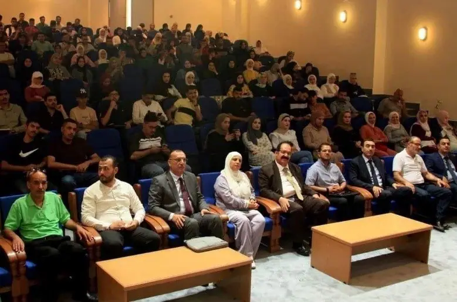
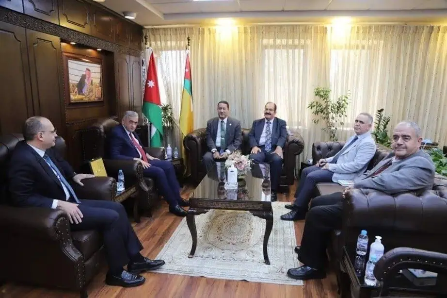
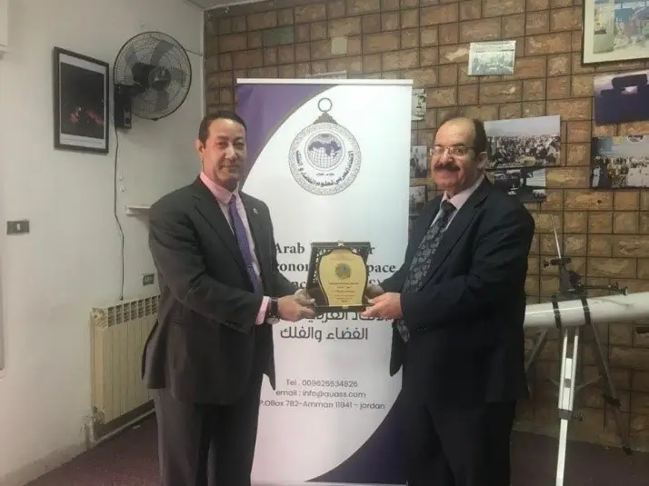
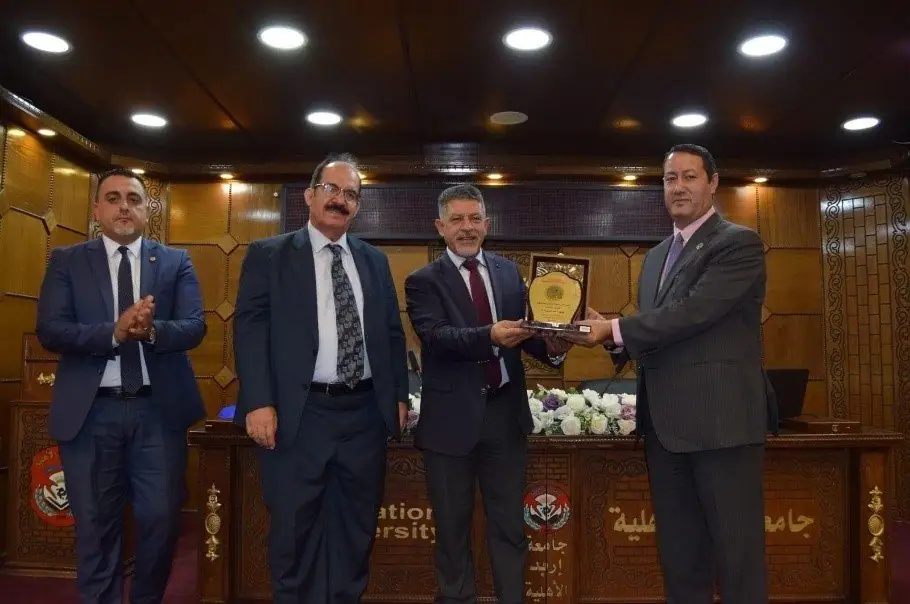
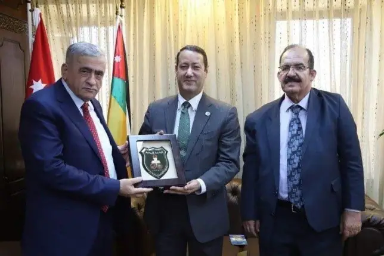
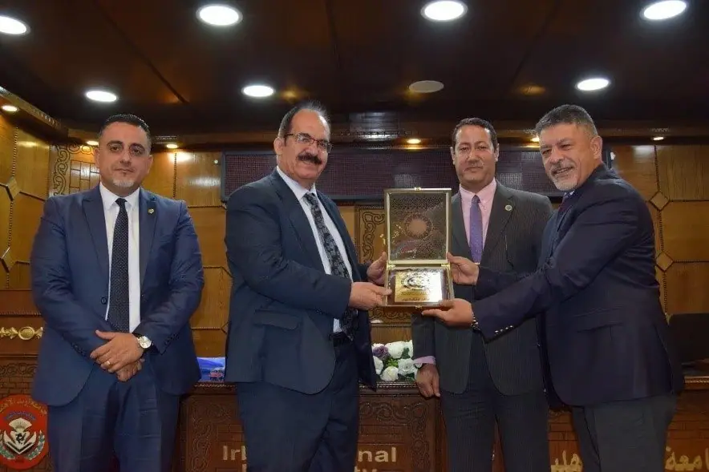
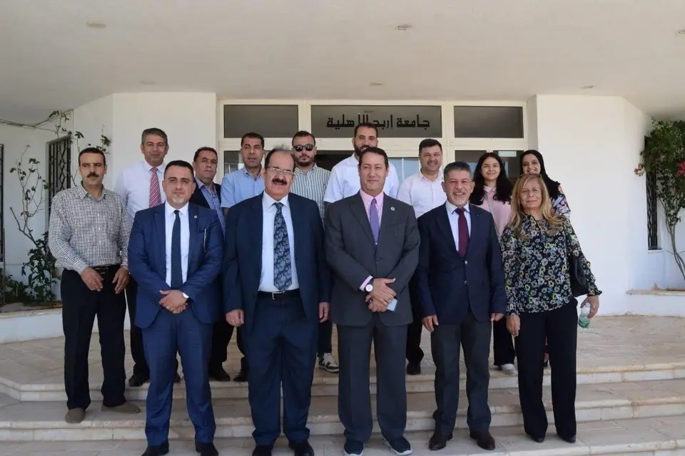

مؤتمرات وندوات وملتقيات أخرى
رئيس المعهد القومي للبحوث الفلكية والجيوفيزيقية يزور مقر الاتحاد العربي لعلوم الفضاء والفلك في عمّان
رئيس المعهد القومي للبحوث الفلكية والجيوفيزيقية يزور مقر الاتحاد العربي لعلوم الفضاء والفلك في عمّان.
استقبل الاتحاد العربي لعلوم الفضاء والفلك ممثلا بأمينه العام د.م. عوني محمد الخصاونة صباح التاسع من آب لعام 2023 الأستاذ الدكتور جاد القاضي رئيس المعهد القومي للبحوث الفلكية والجيوفيزيقية بدعوة رسمية من الاتحاد العربي لعلوم الفضاء والفلك وبتلبيةٍ مشرفة من القاضي.
وبدأت جولة زيارة القاضي في المملكة الأردنية الهاشمية بزيارة جامعة آل البيت إذ قام الأستاذ الدكتور أسامة نصير رئيس جامعة آل البيت باستقبال الدكتور القاضي في مكتبه حيث قدم الدكتور أسامة نصير ملخصا عن جامعة آل البيت موضحا الإنجازات والرؤيا المستقبلية للجامعة وكيفية تطوير التعاون والعلاقات الثنائية بين المؤسستين في مجال العلوم الجيوفيزيقية وعلوم الفلك والفضاء حيث أكد الأستاذ الدكتور جاد القاضي كامل استعداده للتعاون الأكاديمي وإجراء البحوث المشتركة في جميع المجالات ذات العلاقة من خلال التعاون وتبادل الخبرات بين الطرفين، علما أنه تم الاتفاق على توقيع مذكرة تفاهم بين الطرفين.
ومن ثم تقدم القاضي إلى مدرج الهندسة في جامعة آل البيت لمقابلة الكادر التعليمي وثلة من الطلبة فبدأ التقديم الأستاذ الدكتور علي نوح القضاة الحاصل على دكتوراه في الاستشعار عن بعد ونظم المعلومات الجغرافية في جامعة آل البيت مرحباً بالأستاذ الدكتور القاضي والأمين العام للاتحاد الدكتور عوني الخصاونة وبجميع الحضور الكرام من الشخصيات الأكاديمية من أعضاء الهيئة التدريسية والإدارية وطلبة الجامعة وبحضور عدد من أعضاء الاتحاد العربي والمهتمين.
وقد قدم أ.د. القاضي محاضرة شيقة عن دور المعهد القومي للبحوث الفلكية والجيوفيزيقية في التنمية المستدامة والحد من المخاطر في أفريقيا والمنطقة العربية. ووضح الدكتور القاضي أهمية معهد البحوث وما لديه من كفاءات وأجهزة متطورة يتم استخدامها في الأرصاد الفلكية وتحضير الأبحاث العلمية والدراسات في مختلف العلوم الفيزيائية والفلكية ودور المعهد في التنمية المستدامة والحد من المخاطر من خلال التطبيقات المختلفة خاصة في مجال الزلازل مشيرًا إلى استعداد المعهد القومي للبحوث الفلكية والجيوفيزيقية بدعم كافة الراغبين في العلم والمعرفة وإكمال دراساتهم العليا من خلال إتاحة الفرصة لهم في العمل في الأبحاث التطبيقية.
وفي ختام اليوم الأول من الزيارة قدم الأمين العام للاتحاد العربي لعلوم الفضاء والفلك د.م. عوني محمد الخصاونة درعا خاصا للأستاذ الدكتور جاد القاضي تقديراً على أعماله ومساهماته من أجل نشر علوم الفلك والفضاء والعلوم الجيوفيزيقية في العالم العربي.
ومع بداية اليوم الثاني من زيارة القاضي للمملكة الأردنية بحث رئيس الجامعة الأردنية الدكتور نذير عبيدات، مع رئيس المعهد القومي للبحوث الفلكية والجيوفيزيقية الدكتور جاد القاضي، إمكانية فتح أفق التعاون مع المعهد في مجال الأبحاث العلمية المشتركة في علوم الفضاء والفلك والزيارات الطلابية.
وناقش عبيدات خلال اللقاء أهمية تطوير التعاون والعلاقات الثنائية بين الجامعة والمعهد في مجال العلوم الجيوفيزيقية وعلوم الفلك والفضاء والتنظيم المشترك للمحاضرات والتعاون في المجالات البحثية المختلفة وتبادل الخبرات والباحثين في هذا الشأن.
ورحب عبيدات ببناء تعاون مشترك بين الطرفين من خلال توقيع مذكرة تفاهم للتعاون الأكاديمي، وإجراء البحوث المشتركة في جميع المجالات ذات العلاقة في وقت لاحق.
بدوره، قدم القاضي نبذة عن المعهد، وذلك بحضور الأمين العام للاتحاد العربي لعلوم الفضاء والفلك الدكتور عوني الخصاونة، ونائب رئيس الجامعة لشؤون الكليات العلمية الدكتور أشرف أبو كركي، وعميدي كليتي العلوم والهندسة في الجامعة، عرض فيها دور المعهد القومي للبحوث الفلكية والجيوفيزيقية في رصد الأهلة والشهور العربية، ورصد الزلازل، والحسابات الفلكية ورصد الأقمار الصناعية والحطام الفضائي، كما بين أهمية معهد البحوث وما لديه من كفاءات وأجهزة متطورة يستخدمها في الأرصاد الفلكية وتحضير الأبحاث العلمية والدراسات في مختلف العلوم الفيزيائية والفلكية.
يُشار إلى أن المعهد القومي للبحوث الفلكية والجيوفيزيقية مرصد فلكي يقع في منطقة حلوان جنوب القاهرة في مصر، وقد تأسس عام 1903، ويُعدّ أحد أقدم وأكبر وأهم المراصد الفلكية في الوطن العربي، خاصةً في تحديد المسائل الفلكية في الإسلام كرصد الأهلة وتحديد مواقيت الشهور في التقويم الهجري.
وفي ختام هذه الزيارة الشيقة قام الأستاذ الدكتور جاد القاضي رئيس المعهد القومي للبحوث الفلكية والجيوفيزيقية صباح يوم السبت الموافق 12 آب 2023 بزيارة مقر الاتحاد العربي واطلع على أهم الإنجازات والنشاطات والرؤى المستقبلية للاتحاد حيث قدم الأمين العام د.م. عوني محمد الخصاونة ملخصا عن أهم النشاطات والخطط المستقبلية للاتحاد بالتعاون مع مختلف المؤسسات والمراكز الفلكية والفضائية في الدول العربية والمراكز العالمية.
كما تم بحث التعاون المستقبلي بين الطرفين من خلال توقيع مذكرة تفاهم لإجراء البحوث والتعاون المشترك في جميع المجالات الفلكية والفضائية ذات العلاقة.
وفي نهاية اللقاء قام أ.د. جاد القاضي بإهداء درع المعهد إلى الأمين العام للاتحاد العربي د.م. عوني محمد الخصاونة تقديرًا للجهود التي يقوم بها الاتحاد مثمنًا الدور الريادي الذي يقوم به أ.د. حميد مجول النعيمي – رئيس الاتحاد – ومدير جامعة الشارقة والمدير العام لأكاديمية الشارقة لعلوم وتكنولوجيا الفضاء.
وكانت آخر محطات زيارة القاضي جامعة إربد الأهلية التي عقدت ندوة بعنوان دور المعهد القومي للبحوث الفلكية والجيوفيزيقية في التنمية المستدامة والحد من المخاطر في أفريقيا والمنطقة العربية، بحضور الأستاذ الدكتور أحمد منصور الخصاونة رئيس الجامعة، وذلك في مدرج الكندي.
ورحب الأستاذ الدكتور أحمد منصور الخصاونة رئيس الجامعة في بداية اللقاء بمكتبه براعي الندوة الدكتور المهندس عوني الخصاونة، وبالأستاذ الدكتور جاد محمد القاضي، واستعرض نشأة وتطور الجامعة وما تطرحه من تخصصات في مختلف المجالات الإنسانية والعلمية والصحية، ومدى اهتمامها بجودة التعليم فيها مما جعل منها وجهة للطلبة لاستكمال دراستهم الجامعية، وأكد على ضرورة وجود شراكة مستدامة ومؤسسية في العلاقات العلمية بين جامعة إربد الأهلية مع المعهد، تشمل تبادل الزيارات وتشكيل فرق بحثية مشتركة.
وبنهاية اللقاء ونيابة عن الأستاذ الدكتور أحمد منصور الخصاونة رئيس الجامعة، قام الدكتور صامد الدراوشة/ مستشار الرئيس، بتسليم درع الجامعة التذكاري لكل من: الدكتور المهندس عوني الخصاونة راعي الندوة، والأستاذ الدكتور جاد القاضي، وقام الأستاذ الدكتور جاد القاضي بتسليم درع المعهد التذكاري للدكتور صامد الدراوشة/ مستشار الرئيس.







صفحة منقولة من موقع الاتحاد كما نُشرت، مع تنظيف التنسيق وحذف عناوين البريد والهواتف الشخصية.
مؤتمرات وندوات وملتقيات أخرى
- المؤتمر العالمي الأول لاستكشاف الفضاء: القمر وما بعده
- اجتماع الشرق الأوسط وأفريقيا الإقليمي للاتحاد الفلكي الدولي (MEARIM)
- المؤتمر العربي الثامن للفلك والجيوفيزياء
- المؤتمر الحادي عشر: شخصيات مهمة في تاريخ الحضارة العربية الإسلامية
- المؤتمر الثاني عشر للجمعية الأردنية لتاريخ العلوم
- الندوة الدولية: التطورات في الاتصالات الفضائية (تشرين الثاني 2024)
- اجتماع مكافحة الكوارث وتغير المناخ في المناطق القاحلة
- الورشة الفلكية العربية لفيزياء الشمس 2025
- المدرسة الصيفية الفلكية الإقليمية الثالثة (3RASS) في مرصد بيوراكان للفيزياء الفلكية – أرمينيا في الفترة من 11 إلى 15 سبتمبر 2023
- ورشة علمية حول استكشاف الفضاء والابتكار
- الملتقى العربي الثالث لهواة علوم الفضاء والفلك، الجزائر
- الملتقى العربي الثامن لعلوم الفضاء والفلك
- المهرجان الوطني السادس عشر في علم الفلك الجماهيري
- المهرجان الوطني الثامن عشر في علم الفلك الجماهيري – قسنطينة – الجزائر